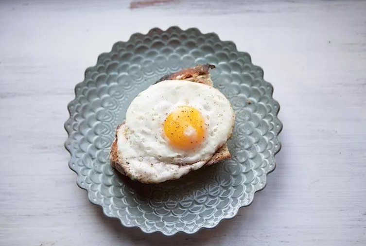

Fried Egg on Toast!

A fried egg on toast may seem dull, but there are few things as satisfying or sublime as a really good fried egg on toast. It’s a breakfast that needs no innovation to make it great, just a little attention. Here’s how I like to make mine, with a nicely crisped, runny egg and a faint whiff of spice.
INGREDIENTS
- 1 piece | Thick, good rustic country style bread
- 1 tbp | Good quality mayonnaise
- 2 pinches | Smoked paprika
- 1 | generous pat of butter
- 1 | Large Egg
STEPS
- Toast your bread until it is nicely golden brown and crisped around the edges. Smear on a thin, but still decidedly noticeable, layer of mayonnaise. Sprinkle a couple of pinches of smoked paprika over the toast.
- Place a small pan—I much prefer to use a pan that is not non-stick, like cast iron—over medium high heat. Add the butter and wait until the butter has melted, foamed up, settled back down and has started to brown. You want the pan to be hot enough that the egg really sizzles when it hits.
- When the pan is hot, crack the egg in. Sprinkle the egg with a good bit of salt. Now, turn the heat down to medium-low, cover the pan and let the egg fry. This will help the white to cook through while the yolk stays runny. When it has reach this stage (cooked white, runny yolk) transfer the egg onto your toast. If there is any remaining browned butter in the pan, scrape that on top too. Sprinkle with some freshly ground pepper and eat.